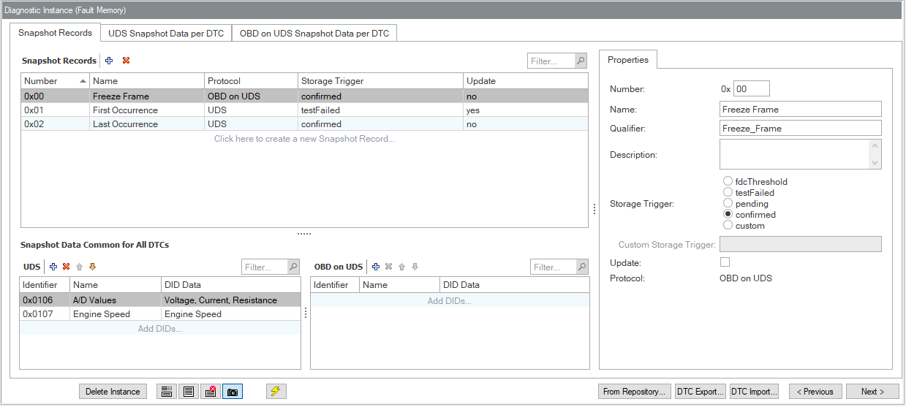
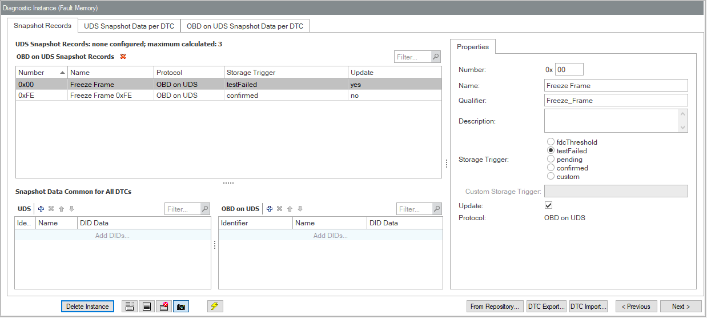

See also the overview of the GUI Snapshot Records (v13 AUTOSAR Fault Memory).
[SRUI-R100] Depending on the Snapshot Record Numeration Type, the contents of the TAB pages varies, as described in the detail chapters:
You control the Snapshot Record Numeration Type in the Diagnostic Instance Property Page "AUTOSAR Fault Memory" [DIUI-R350].
[SRUI-R110] The Snapshot Records TAB for Numeration Type Configured shows...
Look and operations are similar as for Numeration Type "Calculated" [SRUI-R120] below.

Snapshot Records Configured (with OBD on UDS Snapshot Record)
[SRUI-R120] The Snapshot Records TAB for Numeration Type Calculated shows...
Look and operations are similar as for Numeration Type "Configured" [SRUI-R110] above.

Snapshot Records Calculated (with OBD on UDS Snapshot Record)